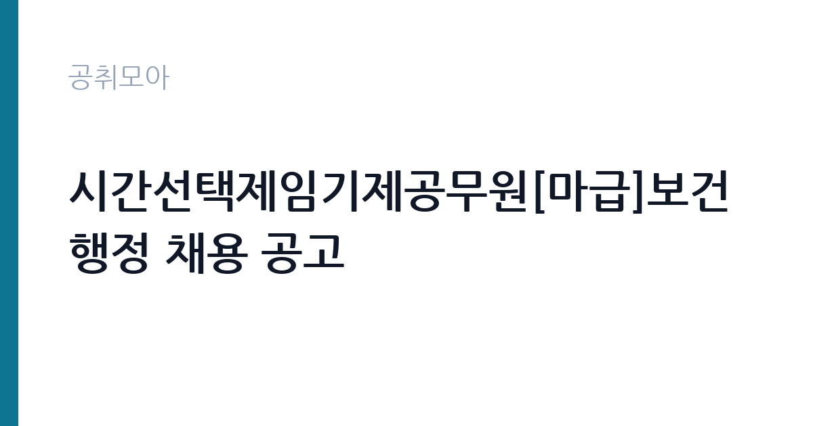

[지자체] 시간선택제임기제공무원[마급]보건행정 채용 공고
서울특별시 서초구 보건소 · 서울 · 마감 2026-10-07 (D-4) · 출처 나라일터

한눈에 보는 모집 조건
| 기관 | 서울특별시 서초구 보건소 |
|---|---|
| 공고명 | 시간선택제임기제공무원[마급]보건행정 채용 공고 |
| 고용형태 | 임기제 |
| 근무지 | 서울 |
| 게시일 | 2026-10-02 |
| 마감일 | 2026-10-07 (D-4) |
지원자격, 이렇게 읽으세요
- 시간선택제임기제공무원마급 1명
- 접수 ~2026-10-07 마감
- 세부 조건은 원문 공고문 확인
시간선택제임기제 마급은 9급 상당의 시간선택 근무 공무원으로, 보건행정 분야 응시자격이 따로 정해져 있습니다. 통상 보건·간호·의료행정 관련 학력이나 자격, 실무경력을 요구하니 붙임 공고문의 자격요건을 꼼꼼히 확인하시기 바랍니다. 접수 시간은 오전 9시부터 오후 6시까지이며 점심시간 낮 12시부터 1시까지는 접수를 받지 않습니다. 문의처는 서초구보건소 의료지원과 의무팀 2155-8103입니다.
이 공고의 포인트
서울 자치구 보건소 시간선택제 공무원은 전일제보다 짧은 시간 근무하면서 공무원 신분과 호봉·복지 혜택을 누릴 수 있는 자리입니다. 육아나 학업, 다른 활동과 병행하려는 분들에게 인기가 높습니다. 보건행정은 감염병 대응과 예방접종, 건강증진 사업 같은 구민 밀착 업무라 현장 경험이 쌓이고, 이후 전일제 임기제나 공무직, 간호직 채용 지원 때 경력으로 활용할 수 있습니다.
전형은 어떻게 진행되나
시간선택제임기제 채용은 서류전형 후 면접전형으로 진행되는 것이 일반적입니다. 서류에서는 보건행정 관련 자격과 경력의 적합성을 심사하고, 면접에서는 민원 응대 자세와 직무 이해도, 시간선택 근무에 대한 이해를 확인합니다. 정확한 전형 단계와 합격자 발표 일정은 붙임 공고문을 기준으로 준비하시기 바랍니다.
원문에서 확인한 전형 방식
서초구 시간선택제임기제 공무원 채용을 아래와 같이 공고합니다. 1. 공고기간 : 2026.9.22.(화) ~ 10.7.(수) 2. 공고장소 : 서초구청 홈페이지 3. 공고내용 가. 채용인원 : 1명(마급 1명) 나. 채용분야 : 보건행정 다. 접수기간 : 2026.10.2.(금) ~ 10.7.(수) 09:00~18:00 (3일간) (※12:00~13:00 점심시간 접수 불가) 라. 접수방법 : 응시자 직접 방문 마. 접수장소 : 서초구보건소 3층 의료지원과 의무팀(☎2155-8103) ※ 기타 자세한 사항은 \붙임\ 공고문을 참고하시기 바랍니다.
이런 분께 추천해요
- 보건·간호·의료행정 관련 자격이나 경력이 있는 분
- 시간선택 근무로 일과 육아·학업을 병행하고 싶은 분
- 서울 자치구 보건소 현장 경험을 쌓고 싶은 분
지원 전 체크리스트
- 붙임 공고문에서 응시자격을 확인했습니다
- 10월 7일 오후 6시 이전에 직접방문 접수할 수 있습니다
- 점심시간 12시부터 1시를 피해 방문 시간을 정했습니다
- 신분증과 제출서류, 증명사진을 미리 챙겼습니다
모집 일정과 제출 타이밍
접수 기간은 2026년 10월 2일부터 10월 7일까지 사흘간이며, 접수 시간은 오전 9시부터 오후 6시까지입니다. 점심시간 낮 12시부터 1시까지는 접수가 불가하고, 접수 장소는 서초구보건소 3층 의료지원과 의무팀입니다. 우편과 대리 접수가 안 되니 본인이 직접 방문해야 하며, 마감일 오후에는 대기 줄이 생길 수 있어 오전 방문을 권합니다.
직무 이해하기: 지자체
보건행정 담당은 보건소의 행정과 민원 실무를 맡습니다. 진료 접수와 제증명 발급, 예방접종 안내, 건강검진과 건강증진 사업 지원, 감염병 대응 행정 보조가 대표 업무입니다. 구민을 직접 대면하는 창구 업무가 많아 친절한 응대와 정확한 안내가 핵심이며, 보건소 정보시스템 입력과 통계 정리 같은 전산 업무도 병행합니다.
자기소개서 작성 팁
자기소개서에는 보건 분야 대면 업무 경험을 중심으로 쓰시기 바랍니다. 민원 응대나 환자 안내, 예방접종과 검진 안내 경험이 있다면 구체적 장면으로 풀어내면 됩니다. 시간선택 근무를 선택한 이유도 소홀히 쓰지 말고, 짧은 시간에 집중해서 성과를 내겠다는 각오로 연결하시기 바랍니다.
면접 준비 포인트
면접에서는 민원 응대 상황 대처와 보건소 업무 이해도를 확인합니다. 불만을 제기하는 민원인 응대, 개인정보 보호, 감염병 유행 시 비상근무 협조 같은 질문이 나옵니다. 서초구보건소의 주요 사업 1개를 파악하고, 시간선택 근무자로서의 책임감을 보여주는 것이 중요합니다.
급여·근무조건 읽는 법
보수는 시간선택제임기제 보수 규정이 적용되며, 정확한 금액은 붙임 공고문에서 확인하시기 바랍니다. 마급은 9급 상당으로, 전일제 9급 1호봉 기본급 월 213만 3천 원(2026년 봉급표 정리 수치)을 기준으로 주당 근무시간 비율만큼 지급되는 구조입니다. 여기에 시간 비례 수당이 더해질 수 있으며, 실제 월 보수액은 근무시간과 호봉 획정으로 확정됩니다. 방문 접수 시 보수와 근무시간을 함께 확인하시기 바랍니다.
자주 묻는 질문
- 대리 접수나 우편 접수가 가능한가요?
본 공고는 응시자 직접방문 접수만 가능합니다. 신분증을 지참하고 접수 시간 안에 서초구보건소를 방문하시기 바랍니다. - 시간선택제는 하루 몇 시간 근무인가요?
주당 근무시간은 공고마다 다르며 통상 전일제의 절반 수준에서 정해집니다. 정확한 근무시간과 요일은 붙임 공고문이나 의무팀 2155-8103으로 확인하시기 바랍니다. - 점심시간에도 접수하나요?
낮 12시부터 오후 1시까지는 접수를 받지 않습니다. 오전 9시부터 12시, 오후 1시부터 6시 사이에 방문하시기 바랍니다.
함께 보면 좋은 공고
[지자체] 2026년 홍천군 지방공무원 경력경쟁임용시험 시행계획 — 마감 2026-10-23[지자체] 제주특별자치도 임기제공무원 임용시험 시행계획 공고(시민고충처리위원회 고충민원전문조사관 분야) — 마감 2026-10-19[지자체] 2026년 제9회 대전광역시 동구 지방임기제공무원 채용시험 시행계획 공고(기록물관리 전문요원) — 마감 2026-10-14출처: 나라일터 공개정보를 바탕으로 공취모아가 정리한 안내글입니다. 모집 조건·일정은 변경될 수 있으니 지원 전 반드시 원문 공고문을 확인하세요. 본 글은 정보 제공용이며 합격을 보장하지 않습니다.